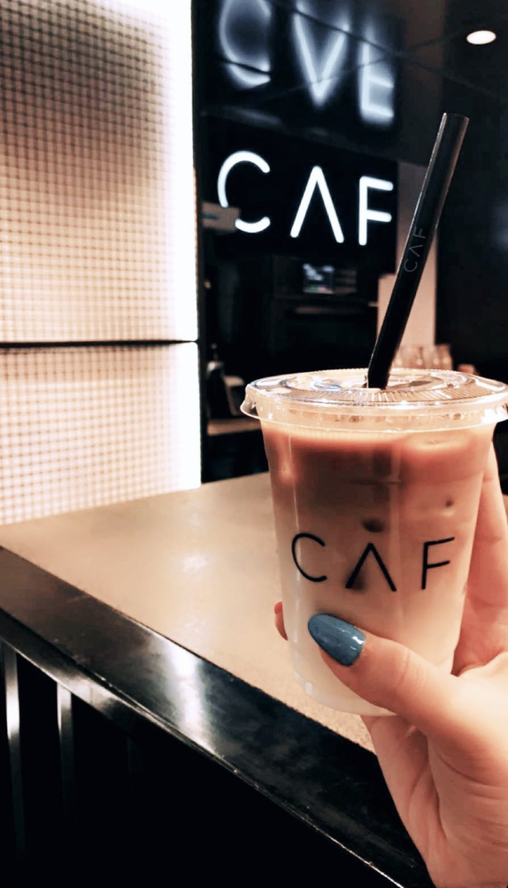
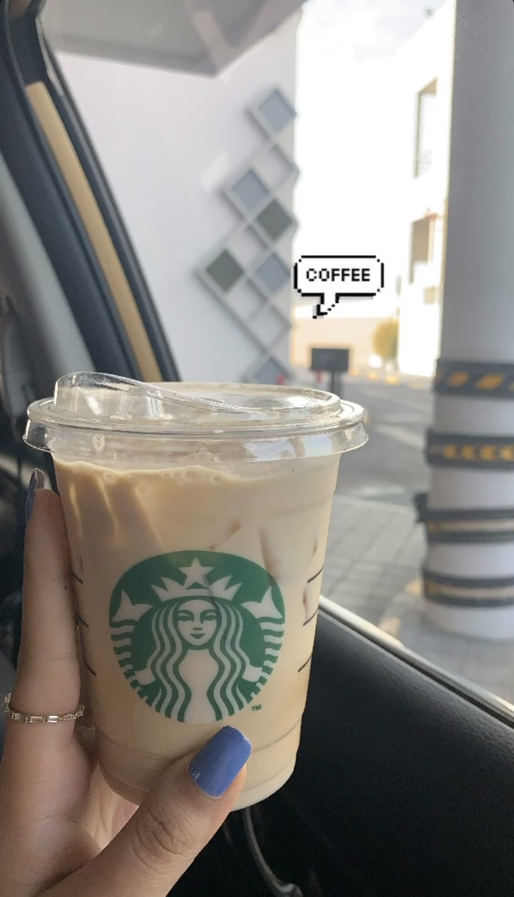
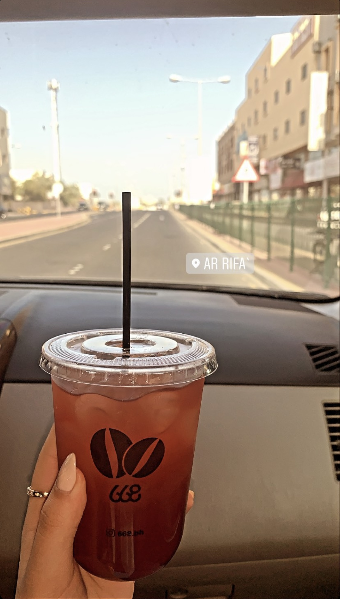
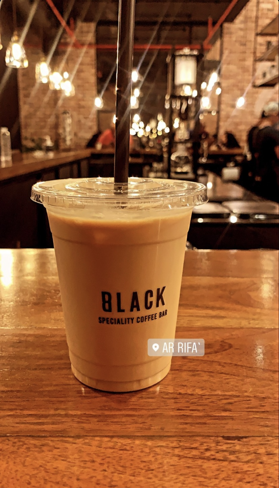
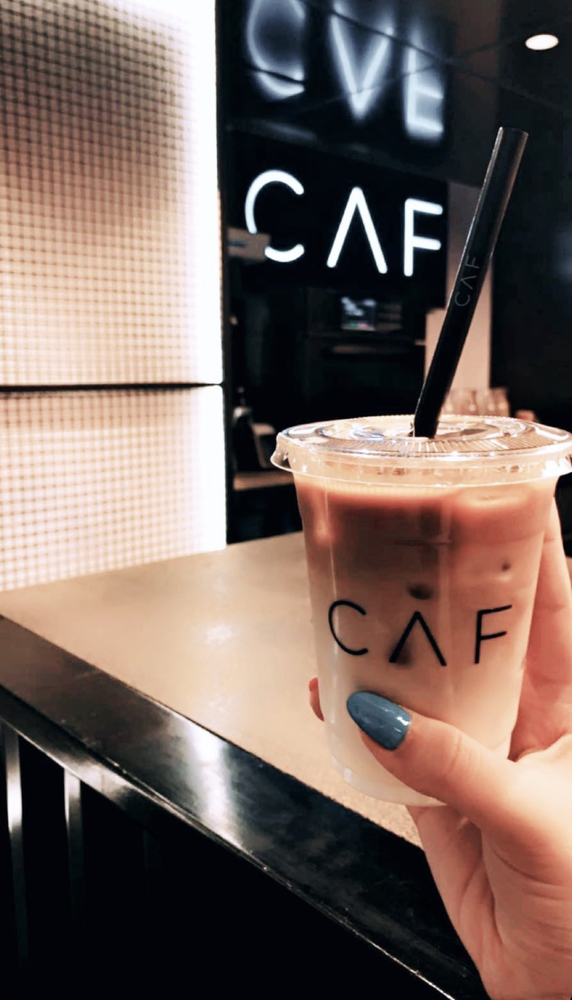
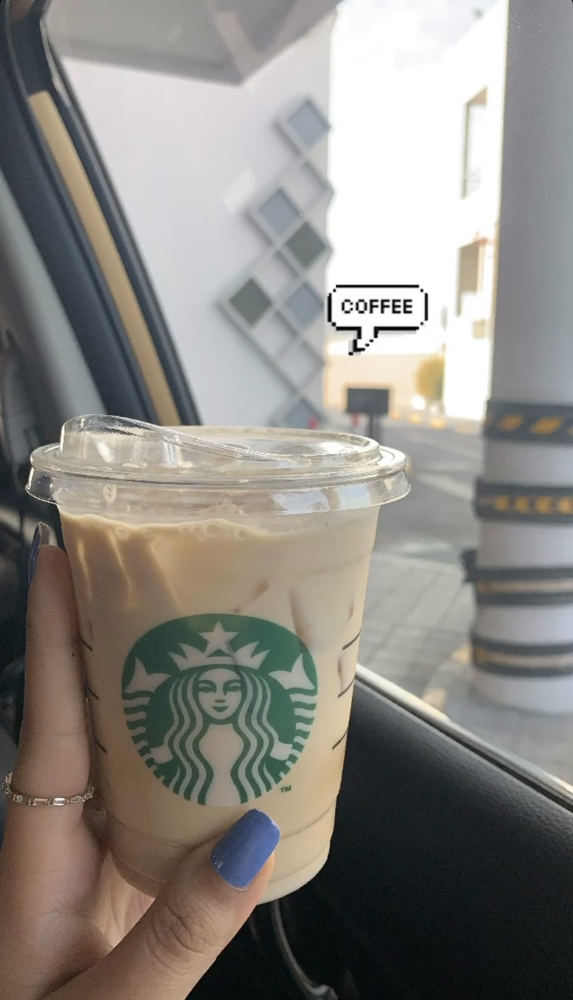
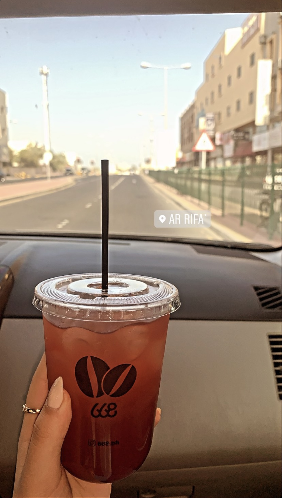
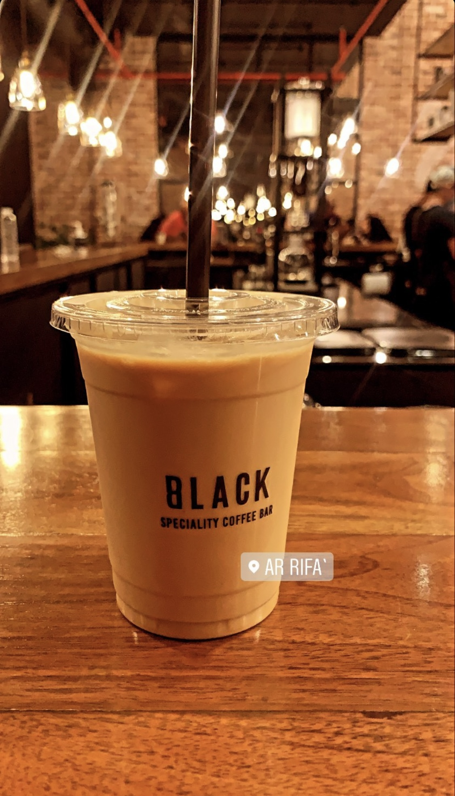

HTML
Coffee has a dark brown to black color, a bitter and slightly sour flavor, and a stimulating effect on individuals due to the caffeine content. It is one of the most popular beverages in the world, and it may be brewed and served in a variety of ways. Coffee can be served fresh when you grind the beans and brew it at the same time.
Coffee flavors include flowery, herby, smokey, nutty, and others. Acidity, bitterness, sweetness, saltiness, and sourness are some flavor descriptions.
These are my best picture shots of coffee and cafes, it's my passion taking pictures of coffee's and cafe's.

 







Cold brew has a stronger flavor than iced Americano. The Americano is made using espresso coffee, whereas the cold brew is steeped for a longer period of time with a different number of coffee beans. Pour two espresso shots to make an Americano.
Americano can be served hot and cold while cold brew can only be served as a cold beverage.
Cold brew must be brewed overnight to serve next day, while Americano is served at the same time.
Coffee is originally served as a bitter to give a strong taste and much more caffeine. It can be served with milk and sugar like Latte, Cappuccino, Mocha, and etc. They are served with quantified amount of milk and sugar.